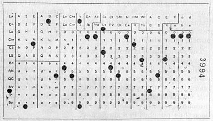

В началото:
Най-старата машина за програмиране (това е машина, чието поведение може да се контролира от промените на програма) е програмният хуманоиден робот на Ал Джазари през 1206 г. Външният вид на робота на Ал Джазари е механизирана лодка с четирима автоматични музиканти, която се носи по езерото и забавлява гостите по време на кралските балове. Неговият механизъм включва програмируеми барабани с ключе, захванати на малка ръчка, които отмерват ритъма. Барабанистът е можел да изпълнява различни ритми в зависимост от положението на ключето.
Табулаторът на Холерит от 1890
Перфокартите на Херман Холерит:
Често за образец на ранното изкуство е считан станът за жакардови тъкани, създаден през 1801 г. В тази машина се използвали картонени карти с дупки по тях, като дупките показват извивките на дрехата. Така в зависимост от картите, които му се поставят, станът можел да произвежда напълно различни дрехи. Такива карти е използвал и Чарлз Бабидж през 1830 г., за да управлява своята сметачна машина. Тук отворите се използват за контрол на машината.
Това нововъведение по-късно е подобрено от Херман Холерит, който прилага перфорацията по определена схема за въвеждане на данни. Холерит изобретява специална перфорираща машина за въвеждане на големи масиви от данни, наречена табулатор.

Перфокарта на Холерит
Комутационен панел с проводници за сметачна машина IBM 402.
През 1896 г. Холерит основава компанията Tabulating Machine Company (днес IBM). До края на 40-те години имало различни видове машини за програмиране с комутационен панел (на английски: unit record equipment), които да изпълняват четенето на картите. Ранните компютри също са били програмирани чрез комутационни панели.
Джон фон Нойман:
Изобретението на Джон фон Нойман позволява програмите да бъдат запаметени в компютърна памет. Ранните програми трябвало стриктно да задават инструкциите на отделната машина, обикновено в бинарен вид. Всеки модел компютър се нуждаел от различни команди за изпълняването на една и съща задача. По-късно са създадени езиците за програмиране, които позволяват на програмистите да представят всяка инструкция в текстов формат, като въвеждат абревиатури за всички операции, вместо да ползват числа и специфични адреси в символен формат. През 1954 г. е създаден FORTRAN — първият език на високо ниво. Това позволило на програмистите да извършват изчисленията директно чрез задаване на нужната формула. Изходният текстов код на програмата се превежда до машинни инструкции чрез специална програма, наречена компилатор. След това са създадени още много езици за програмиране (някои от тях с комерсиална цел) — като например COBOL. Програмите обаче все още се въвеждат с перфокарти или перфолента.
Модерно програмиране:
Към края на 60-те години устройствата за съхранение на данни и компютърните терминали се развиват достатъчно, за да стане възможно програмите да бъдат писани директно на клавиатурата. Създадени са текстови редактори, които позволяват на програмистите да въвеждат, редактират и обработват кода си много по-лесно, отколкото с перфокартите.